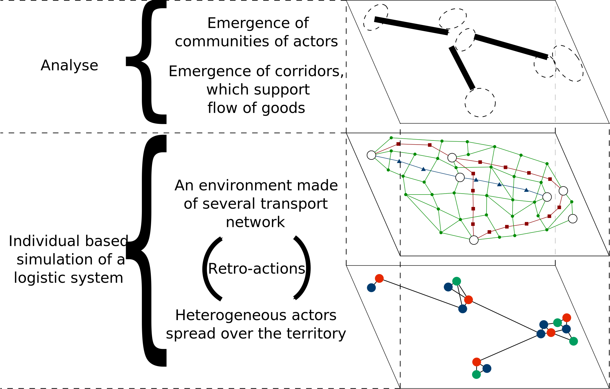

Thibaut Démare - LITIS
thibaut.demare@univ-lehavre.fr
thibaut.demare@univ-lehavre.fr
Effects of Ports Attractiveness on Logistic Flows in a Competition Context
IPaSPort'2017 International Conference
Le Havre
3 - 4 May 2017
Le Havre
3 - 4 May 2017
Effects of Ports Attractiveness on Logistic Flows in a Competition Context
Thibaut Démare
Stefan Balev, Cyrille Bertelle, Antoine Dutot, Dominique Fournier and Eric Sanlaville
Normandie Université
LITIS
IPaSPort'2017 International Conference
3 - 4 May 2017
[Hit the space bar to go to the next slide or the '?' button to show the help]
Overview
- Context and issues
- Model
- Results
Context and issues
Logistic systems show complexity
- It is a geographical territory composed of urban areas and of logistic structures.
- These structures support organized flows of goods which mainly move between the urban areas, forming the logistic corridor.
- The goods enter and leave the system through well-known access nodes.
- Different constraints (spatial, economical, political, or ecological) act over the system.
- There are numerous and heterogeneous actors (importers, exporters, freight forwarders, logistic providers,...). Their behaviors and interactions with each other allow to organize the flows of goods. They are auto-organized.
Figure 1: A flow auto-organized by numerous and heterogeneous actors
Problematic
- We want to understand how actors with different goals, are organized around all the logistic infrastructures to manage flows of goods despite all the constraints of the system.
- We are looking for an individual-based model which can reproduce the working of a logistic system thanks to the simulation.
- And then we could test different scenarios on this simulation to understand how the local decisions impact the system.
Model
A complex system approach
- An agent-based model which represents each actor and infrastructure thanks to autonomous and reactive entities.
- These agents have predefined rules which describe how they behave and interact together according to their perceptions of the environment and to their needs.
- A dynamic graph represents the transportation network.
- We can follow in real time each vehicle agent and observe the traffic evolution.

Figure 2: Model representation
Figure 2: Model representation
Results
Implementation
- We implemented the model as a step-by-step simulation into the agent-based simulation platform GAMA.
- We use real data on the Seine axis to check its validity and to make measures.
- The Seine axis is mostly represented by the road (around 90% of the traffic is by road).

Figure 2: Implemented agents
How do logistics service providers (LSPs) select a port?
$$F_{ij} = \frac{A_i}{d_{ij}^2}$$- $F_{ij}$ is the force of attraction between the port $i$ and the LSP $j$.
- $A_i$ is the attractiveness of the port $i$. This parameter represents the competition between ports: a higher attractiveness value means that the port is more competitive than another one.
- And $d_{ij}$ is the distance between $i$ and $j$.
Effects of port attractiveness on traffic
Conclusion
To sum up
- We proposed an agent-based model and dynamic graphs to represent a logistic system
- The implementation has been done thanks to the GAMA platform and it uses data on the Seine axis.
- It allows us to observe the effects of a local parameter on macro properties: here the port attractiveness on the traffic evolution.
Perspectives
- We want to implement the multi-modality.
- We want to study the interaction network in order to detect special communities of actors.
Thank you for your attention !
thibaut.demare@univ-lehavre.fr